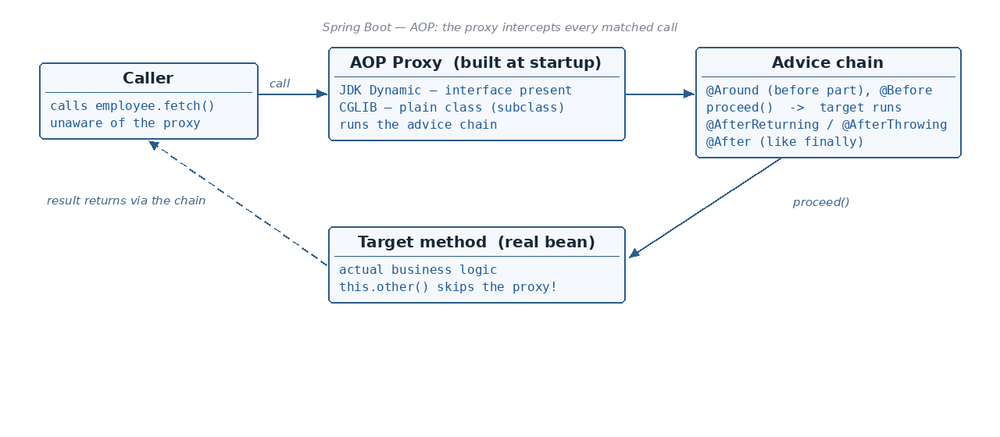

What AOP is, and why logging / transactions / security belong in an Aspect · Pointcut vs Advice vs JoinPoint — the…
☕ 9 min read · 🎬 Video walkthrough · 📊 UML diagram · 💻 Runnable code
⚡ In a nutshell — What AOP is, and why logging / transactions / security belong in an Aspect · Pointcut vs Advice vs JoinPoint — the three words behind every AOP example · Every pointcut designator: execution (with wildcards), within, @within, @annotation, args, @args, target — plus combining and naming pointcuts · @Before, @After and @Around advice with ProceedingJoinPoint
Used during:

Added: this repetitive code that cuts across many classes (every service wants logging, every repository wants a transaction) is called a cross-cutting concern. AOP moves each cross-cutting concern out of the business classes into one Aspect module.
Dependency you need in pom.xml:
<dependency>
<groupId>org.springframework.boot</groupId>
<artifactId>spring-boot-starter-aop</artifactId>
</dependency>
@Component
@Aspect
public class LoggingAspect {
@Before("execution(public String com.x.Employee.fetch())")
public void beforeMethod() { // <-- the method body is the ADVICE
System.out.println("Hi");
}
}
The string inside @Before(...) is a pointcut — let's break it apart:
Good to know: the access modifier is truly optional — just leave it out. The return type position must always be present, but you can put the
*wildcard there instead of a concrete type, which effectively "omits" it.
Pointcut: it is an expression which tells where an Advice should be applied.
(a) The * wildcard — matches any single item.
// Matches fetch() with ANY return type
@Before("execution(* com.x.Employee.fetch())")
// Matches ANY method of Employee with a single String parameter
@Before("execution(* com.x.Employee.*(String))")
// Matches the fetch method that takes ANY single parameter
@Before("execution(String com.x.Employee.fetch(*))")
(b) The (..) wildcard — matches 0 or more.
// Matches the fetch method that takes any 0 or MORE parameters
@Before("execution(String com.x.Employee.fetch(..))")
// Matches the fetch method in "com.x" package AND subpackage classes
@Before("execution(String com.x..fetch())")
// Matches ANY method in the "com.x" package and subpackage classes
@Before("execution(String com.x..*())")
// This pointcut will run for EACH method in the class Employee
@Before("within(com.x.Employee)")
// This pointcut will run for EACH method in this package and subpackages
@Before("within(com.x..*)")
Matches any method in a class which has this annotation (it works on class level; org.x.Service here is an annotation):
@Before("@within(org.x.Service)")
Matches any method that is annotated with the given annotation:
@Before("@annotation(org.x.Annotation)")
Matches any method with a particular argument:
@Before("args(String, int)")
// In case of an object rather than a primitive type:
@Before("args(com.x.Employee)")
Matches any method with a particular parameter, where that parameter's class is annotated with a particular annotation (org.x.Service is the annotation):
@Before("@args(org.x.Service)")
Matches any method on a particular instance of a class (also works when you give an interface, like com.x.Employee below):
@Before("target(com.x.EmployeeUtils)")
// com.x.Employee is an interface:
@Before("target(com.x.Employee)")
execution — a particular method in a particular class — execution(* com.x.Employee.fetch())within — all methods of a class / package — within(com.x..*)@within — any method of a class carrying the annotation (class level) — @within(org.x.Service)@annotation — any method annotated with the given annotation — @annotation(org.x.Annotation)args — any method with the given argument types — args(String, int)@args — method whose parameter's class carries the annotation — @args(org.x.Service)target — any method on a particular instance (or interface) — target(com.x.Employee)Added: Spring AOP adds one designator of its own —
bean(name-pattern)matches by bean name:@Before("bean(*Repository)")intercepts every method of every bean whose name ends withRepository. (And its cousinthis(...)matches the proxy's type, whereastarget(...)matches the real object behind the proxy — the difference shows up with JDK proxies.)
Two pointcuts can be combined using && (boolean and) and || (boolean or):
@Before("execution(* com.x.Employee.*())"
+ " && @within(org.x.RestController)")
Named Pointcut — define the expression once, reuse it everywhere:
@Pointcut("execution(* com.x.Employee.*())")
public void custompointcut() {}
@Before("custompointcut()") // refers to the @Pointcut method above
public void beforeNamed() {
System.out.println("named pointcut matched");
}
@Component
@Aspect
public class LoggingAspect {
// 1) execution: any return type, exact method
@Before("execution(* com.x.Employee.fetch())")
public void beforeFetch() { System.out.println("before fetch()"); }
// 2) within: every method in com.x and its subpackages
@Before("within(com.x..*)")
public void beforeWithin() { System.out.println("inside com.x.."); }
// 3) @within: class-level annotation
@Before("@within(org.springframework.stereotype.Service)")
public void beforeServiceClass() { System.out.println("@Service class"); }
// 4) @annotation: method-level annotation
@Before("@annotation(org.x.Annotation)")
public void beforeAnnotated() { System.out.println("annotated method"); }
// 5) args: argument types
@Before("args(String, int)")
public void beforeArgs() { System.out.println("(String, int) call"); }
// 6) @args: the parameter's CLASS carries the annotation
@Before("@args(org.x.Service)")
public void beforeAtArgs() { System.out.println("param class annotated"); }
// 7) target: a particular instance
@Before("target(com.x.EmployeeUtils)")
public void beforeTarget() { System.out.println("EmployeeUtils object"); }
// Combined pointcut: && / ||
@Before("execution(* com.x.Employee.*())"
+ " && @within(org.x.RestController)")
public void beforeCombined() { System.out.println("both matched"); }
// Named pointcut: define once, reuse
@Pointcut("execution(* com.x.Employee.*())")
public void custompointcut() {}
@Before("custompointcut()")
public void beforeNamed() { System.out.println("named pointcut"); }
}
Advice: it's an action which is taken @Before, or @After, or @Around the method execution.
@Before or @After — simple, and we have already seen them above.@Around — it surrounds the method execution (before and after both).@Around("execution(* com.x.EmployeeUtils.*())") // <-- this string: POINTCUT
public Object aroundMethod(ProceedingJoinPoint joinPoint) throws Throwable {
System.out.println("before the method"); // whole body: ADVICE
Object result = joinPoint.proceed(); // actual method invocation
System.out.println("after the method");
return result;
}
JoinPoint: it is generally considered the point where the actual method invocation happens — joinPoint.proceed() above is exactly that point.
Added: two more advice types worth knowing —
@AfterReturningruns only when the method returns normally (and can read the returned value),@AfterThrowingruns only when it throws (and can read the exception). Plain@Afterruns in both cases, like afinally.
@AfterReturning(pointcut = "execution(* com.x.Employee.*())", returning = "result")
public void logResult(JoinPoint jp, Object result) {
System.out.println(jp.getSignature() + " returned " + result);
}
@AfterThrowing(pointcut = "execution(* com.x.Employee.*())", throwing = "ex")
public void logFailure(JoinPoint jp, Exception ex) {
System.out.println(jp.getSignature() + " failed: " + ex.getMessage());
}
Added: every advice can take a
JoinPointas its first parameter to inspect the intercepted call — and pointcut designators can bind values straight into advice parameters. This binding trick is the engine behind every "custom annotation" aspect (retry, audit, rate-limit).
@Before("execution(* com.x.Employee.*(..))")
public void log(JoinPoint jp) {
System.out.println(jp.getSignature()); // which method
System.out.println(Arrays.toString(jp.getArgs())); // actual arguments
Object realObject = jp.getTarget(); // object behind the proxy
}
// Parameter binding: @annotation(retry) binds the ANNOTATION ITSELF
// into the advice, so you can read its attributes:
@Around("@annotation(retry)")
public Object withRetry(ProceedingJoinPoint pjp, Retry retry) throws Throwable {
Exception last = null;
for (int i = 0; i < retry.attempts(); i++) { // attribute from the annotation
try { return pjp.proceed(); }
catch (Exception e) { last = e; }
}
throw last;
}
The same binding works for arguments: @Before("args(name,..)") + void advice(String name) hands you the first argument, already typed.
Added: when several aspects match the same method, control who runs first with
@Orderon the aspect class — lower value = outer ring:
@Aspect @Component @Order(1)
public class SecurityAspect { } // outermost
@Aspect @Component @Order(2)
public class LoggingAspect { } // runs inside SecurityAspect
Execution is an onion: security-before → logging-before → method → logging-after → security-after. Without @Order, the sequence between aspects is undefined — never rely on it.
Two natural questions:
The answer: all the expensive matching happens once, at application startup — not on every call.
@Aspect annotated classes.
- Parse the pointcut expressions — done by the PointcutParser.java class.
- Store them in an efficient data structure or cache after parsing.
- Look for @Component, @Service, @Controller etc. annotated classes.
- For each class, check if it is eligible for interception based on the pointcut expressions — done by the AbstractAutoProxyCreator.java class.
- If yes, it creates a Proxy — JDK Dynamic proxy or CGLIB proxy. This proxy class has code which executes the advice before the method, then the method execution happens, and lastly the advice (if any) after.Which proxy is chosen?
// 1) The class implements an interface -> JDK Dynamic proxy
interface X { }
class EmployeeUtils implements X { }
// 2) A plain class without an interface -> CGLIB proxy
class X { }
Now, when we initiate the request after application startup, this proxy class is actually invoked — it runs the before-advice, calls your real method, then runs the after-advice.
Good to know: because AOP is proxy-based, a method calling another method of the same class (
this.otherMethod()) does not go through the proxy — so its advice will NOT run. This "self-invocation" pitfall also applies to@Transactional, which is built on this exact machinery. Also, CGLIB cannot proxyfinalclasses or methods.
final classes/methods can't be CGLIB-proxied; private methods are invisible. These cause the classic "my aspect doesn't fire" bugs.@Timed/@Observed and Spring's @Transactional, @Cacheable, @Async are all this same machinery — you already run 4-5 aspects in production.execution(* *(..)).@Before, @After, @Around, plus @AfterReturning / @AfterThrowing), JoinPoint = the actual method invocation point.execution, within, @within (class annotation), @annotation (method annotation), args, @args, target — combine with && / ||, reuse via named @Pointcut. Spring adds bean(name-pattern).* = any single item; (..) = 0 or more parameters; com.x.. = package + subpackages.@Around advice receives a ProceedingJoinPoint; joinPoint.proceed() invokes the real method.JoinPoint — getArgs(), getSignature(), getTarget(); @annotation(param) / args(param,..) bind the annotation or argument into the advice (basis of custom-annotation aspects).@Order(n) on the aspect class; lower = outer (first before, last after); unordered = undefined sequence.@Aspect → parse pointcuts (PointcutParser) → cache → scan beans → eligibility check (AbstractAutoProxyCreator) → build proxy.Next topic: Transaction Management — @Transactional, ACID, the TransactionManager hierarchy and propagation, all riding on this AOP machinery.
👏 Found this useful? Give it a few claps so more developers discover it, and follow for the whole series — every article ships with a UML diagram, runnable code, a narrated video, and a companion PDF. Happy building! 🚀